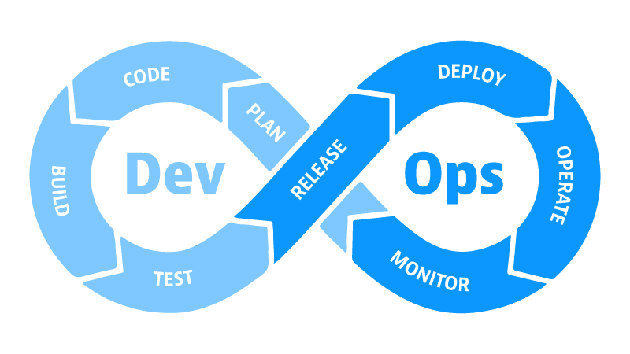

Що таке DevOps?
DevOps – це культура, практика та інструменти, які дозволяють командам розробки та операцій працювати разом для прискорення доставки високоякісного ПЗ.
Історія DevOps
Термін "DevOps" з'явився у 2009 році на конференції Agile. Він еволюціонував з практик Agile та Lean, фокусуючись на автоматизації та співпраці. Сьогодні DevOps є стандартом для сучасної розробки.
Основна ідея
DevOps – це підхід, який об’єднує розробку (Dev) та експлуатацію (Ops) програмного забезпечення. Його мета – швидше та надійніше доставляти програмні продукти користувачам, зменшуючи час від ідеї до продакшену.
Як працює DevOps?
DevOps передбачає тісну співпрацю між розробниками та системними адміністраторами, використання автоматизації, моніторингу та безперервної інтеграції/доставки (CI/CD). Ключові етапи: планування, кодування, тестування, реліз, деплоїмент, операції та моніторинг.
Основні принципи
- Автоматизація процесів: Використання інструментів для повторюваних завдань.
- Безперервна інтеграція та доставка: Автоматичне тестування та деплоїмент.
- Співпраця між командами: Комунікація та спільна відповідальність.
- Моніторинг та швидкий зворотний зв’язок: Постійне спостереження за системою.
- Культура безпек: Інтеграція безпеки на всіх етапах (DevSecOps).
Популярні інструменти DevOps
- Контейнеризація: Docker, Kubernetes
- Конфігурація: Ansible, Terraform
- Моніторинг: Prometheus, Grafana
- CI/CD: Jenkins, GitHub Actions
Ці інструменти допомагають автоматизувати інфраструктуру як код (IaC).
Чому це важливо?
DevOps допомагає зменшити кількість помилок, прискорює випуск нових версій, підвищує стабільність та покращує взаємодію між командами. За даними State of DevOps Report, команди з DevOps-практиками випускають код у 208 разів частіше.
Приклади впровадження
Компанії як Netflix, Amazon та Google використовують DevOps для масштабування сервісів. Наприклад, Netflix застосовує Chaos Engineering для тестування стійкості.